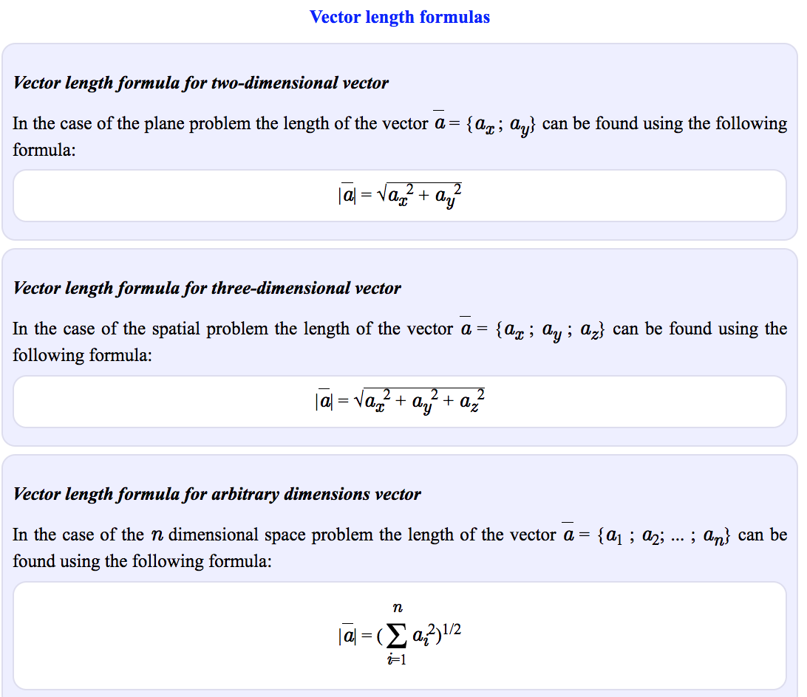

In this first module we look at how linear algebra is relevant to machine learning and data science. Then we’ll wind up the module with an initial introduction to vectors. Throughout, we’re focussing on developing your mathematical intuition, not of crunching through algebra or doing long pen-and-paper examples. For many of these operations, there are callable functions in Python that can do the adding up - the point is to appreciate what they do and how they work so that, when things go wrong or there are special cases, you can understand why and what to do.
Motivations for linear algebra:
Example: Histogram of population height.
How to find best fit of mu and sigma for population height? - Optimize on Sum of Squared Residuals (SSR): Take all of the residuals, square them and add them together. - Choose a random point, calculate errors. - Slightly adjust mu and sigma (mu prime, sigma prime), see if means square error improves.
What are considered vectors: - List of numbers: Vectors are usually viewed by computers as an ordered list of numbers which they can perform “operations” on - Positions in space-time: A vector in space-time can be described using 3 dimensions of space and 1 dimension of time according to some co-ordinate system. - Something which moves in a space of fitting parameters: Vectors can be viewed as a list of numbers which describes some optimisation problem
Elimination: Taking second equation away from the first to solve a pair of equations. Reference: Khan video.
Example 1 - elimination by summing
"""Problem - find x and y"""
3x + 4y = 2.5
5x - 4y = 25.5
"""Solution"""
# Find x by elimination - in this case, summing eliminates y variable.
8x + 0y = 28
x = 28/3 # 3.5
# Find y, using derived x value
3(3.5) + 4y = 2.5
4y = (2.5 - 10.5) # -8
y = -8/4 # -2
x, y = 3.5, -2Example 2 - elimination by multiplication + subtracting
""""Problem - find x and y""""
3x - 2y = 4
6x + 3y = 15
"""Solution"""
# Set x to same by multiplying first equation by 2
6x - 4y = 8
6x + 3y = 15
# Use elimination by subtraction
0x - 7y = -7
y = -7/-7
y = 1
# Find x
6x + 3(1) = 15
6x = 15-2 # 12
x = 12/6 # 2
x = 2
x, y = 2,Substitution: Rearrange one of the equations to the from x = ay + b or y = cx + d and then substitute x or y into the other equation.
Example:
"""Problem - find x and y"""
-2x + 2y = 20
5x + 3y = 6
"""Solution"""
# Isolate x first
-2x = 20-2y
x = (20-2y)/-2
x = -10+y
# Inject derived x into other equation to get y
5(-10+y) + 3y = 6
-50 + 5y + 3y = 6
8y = 56
y = 56/8
y = 7
# Inject derived y into other equation to get x
x = -10 + 7
x = 3
x, y = 3, 72 operations reviewed: additions and multiplication by scalar - Vector additions are associative (order doesn’t matter) - Defining coordinate systems allow for vector operations - Vectors doesn’t have to deal with geometry, it can be applied to feature attributes.
In this module, we look at operations we can do with vectors - finding the modulus (size), angle between vectors (dot or inner product) and projections of one vector onto another. We can then examine how the entries describing a vector will depend on what vectors we use to define the axes - the basis. That will then let us determine whether a proposed set of basis vectors are what’s called ‘linearly independent.’ This will complete our examination of vectors, allowing us to move on to matrices in module 3 and then start to solve linear algebra problems.
Given vector r=[3,2] and s=[-1,2], the dot product is the sum of the i elements of each indices multiplied together:
# Calculate dot product
r, s = [3,2], [-1,2]
rs_1 = r[0] * s[0] # -3
rs_2 = r[1] * s[1] # 4
rs_1 + rs_2 # 1
# Equivalent to
np.dot(r,s)r.dot(s) == s.dot(r)r.dot(s+t) == r.dot(s) + r.dot(t)r.dot(a*s) == a*(r.dot(s))From: https://onlinemschool.com/math/library/vector/length/ 
cos(90) == 0).cos(0) == 0). .cos(180) == -1).r and s are perpendicular, the scalar projection of s on to r is zero. In this case, cos(90) == 0, hence the scalar projection is also 00.Basis vectors: The basis of a vector space is a set of linearly independent vectors that span the full space.
From 3blue1brown video: - î and ĵ are the “basis vectors” of the xy coordinate system. - Numbers of coordinates are scalars that scale the basis vectors (e.g. [-5,2] scale i hat by -5 and j hat by 2) - If we change basis vectors, we’d get a completely different set of vectors. - The “span” of i hat and j hat is the set of all of their linear combinations (vector additions). - Most pair of vectors allow you to reach every possible point on the plane. They are “linearly independent”. - Exception 1 - “Linearly dependent”: If 2 vectors line up, they can only scale on 1 dimensions (a straight line) - Exception 2: If both vectors are zero, they are stuck at zero.
From Coursera course: - Vectors aren’t tied to the axes that we originally used to describe it. We can re-describe it using some other axis, ie. other basis vectors. - When new basis vectors are orthogonal to each other, we can move the numbers in a vector from one basis to another.
Reference: - https://www.youtube.com/watch?v=k7RM-ot2NWY
A collection of vectors are linearly independent if the equation involving linear combinations a1v1 + a2v2 + anvn = 0 is true ONLY when the scalar ai are all equal to zero.
A collection of vector are linearly dependent if the equation has a solution when at least one of the scalars is not zero.
Example set of vectors and steps: Use row reduction to find echelon form (?).
Example: Fitting a line to data points
Matrix multiplication: We can think of a matrix multiplication as just being the multiplication of the vector sum of the transformed basis vectors.
# Matrix multiplication (pseudocode)
a = [[2, 3],[10, 1]]
b = [3, 2]
a.matmul(b) == [2*3 + 3*2, 10*3 + 1*2])
a.matmul(b) == [12, 32] # Identity matrix - A matrix that does nothing
a = np.array([[1, 0], [0, 1]])
b = np.array([1, 1])
c = np.matmul(a, b)
print(c) # [1 1]
# Stretch matrix with larger x, y values
a = np.array([[3, 0], [0, 2]])
b = np.array([1, 1])
c = np.matmul(a, b)
print(c) # [3 2]
# Stretch matrix with negative x and positive y = inverts x
a = np.array([[-1, 0], [0, 1]])
b = np.array([1, 1])
c = np.matmul(a, b)
print(c) # [-1 1]
# Stretch matrix with negative x, y values - flips over to negative values
a = np.array([[-1, 0], [0, -1]])
b = np.array([1, 1])
c = np.matmul(a, b)
print(c) # [-1 -1]
# Flip matrix by 180 degrees by inverting the matrix
a = np.array([[0, 1], [1, 0]])
b = np.array([10, 1])
c = np.matmul(a, b)
print(c) # [1 10]
# Shear transform: Creates parallelogram
a = np.array([[1, 0], [1, 1]])
b = np.array([1, 1])
c = np.matmul(a, b)
print(c) # [1 2]
# Rotate vector: Rotate anticlockwise by 90 degrees
a = np.array([[0, -1], [1, 0]])
b = np.array([1, 1])
c = np.matmul(a, b)
print(c) # [-1 1]